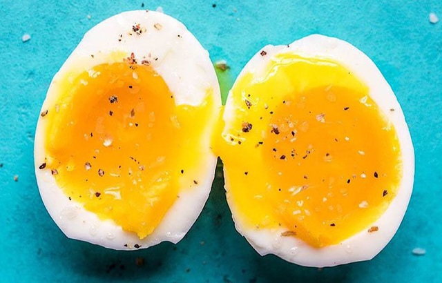

Lòng đỏ trứng chứa nguồn cholesterol tốt nhất trong các loại thực phẩm. Tuy nhiên, nhiều người Việt vẫn đang ăn quá ít trứng và chế biến trứng sai cách, khiến chất dinh dưỡng bị bỏ phí.
Theo PGS.TS Lê Bạch Mai, nguyên Phó viện trưởng Viện Dinh dưỡng Quốc gia (Hà Nội), trứng là một loại thực phẩm hoàn hảo, có chứa đến 60 loại dưỡng chất. Đặc biệt, lòng đỏ trứng chứa nguồn chất béo cholesterol tốt nhất mà con người có thể tìm thấy ở các loại thực phẩm.
“Nhiều người e ngại việc ăn trứng vì nghĩ rằng trong lòng đỏ có chứa nhiều cholesterol. Tuy nhiên, cần phải hiểu rằng, đây là loại cholesterol tốt, khác với loại cholesterol xấu trong thịt mỡ”, PGS Mai chia sẻ.
Chuyên gia này phân tích kỹ hơn, các cholesterol tốt (HDL-C) có trong lòng đỏ trứng có khả năng vận chuyển cholesterol từ máu về gan, đồng thời đưa cholesterol ra khỏi mảng xơ vữa thành mạch. Từ đó, giúp làm giảm nguy cơ xơ vữa động mạch cũng như các biến cố về tim mạch khác.
Chuyên gia này phân tích: “ Lòng trắng trứng có 2 chất phản dinh dưỡng là antitrypsin gây khó khăn cho việc tiêu hóa protein và avidin ảnh hưởng tới quá trình hấp thụ vitamin B2. Do đó, lòng trắng trứng phải nấu chín. Đối với lòng đó, nếu đảm bảo được vệ sinh, an toàn thực phẩm thì có thể ăn tái”.